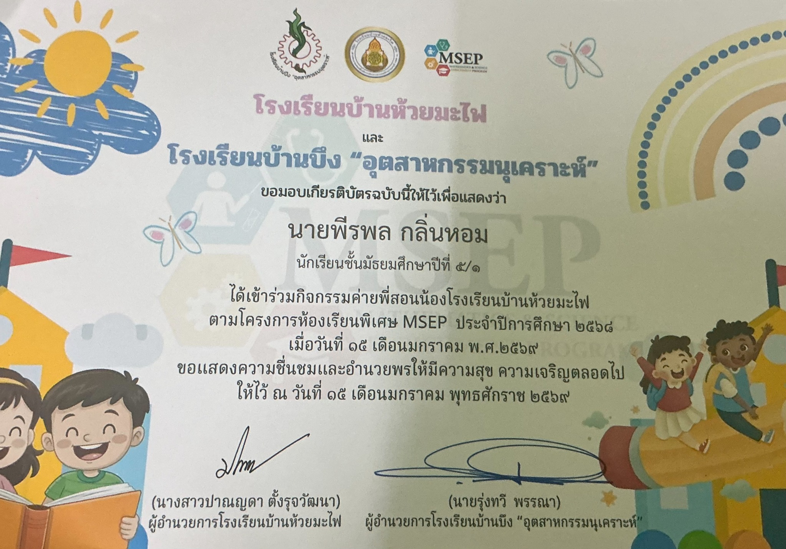

ACHIEVEMENTS
ผลงานและเกียรติบัตรที่สะท้อนประสบการณ์ของผม

อันดับที่ 12
การแข่งขัน Crossword Game
เข้าร่วมการแข่งขัน Crossword Game ระดับมัธยมศึกษาตอนปลาย และได้รับรางวัลอันดับที่ 12 จากการแข่งขันชิงแชมป์ภาคตะวันออกและภาคกลาง ประจำปี 2568
- วันที่ 16–17 สิงหาคม 2568
- ศูนย์การค้าแปซิฟิคพาร์ค ศรีราชา
- ฝึกการใช้คำศัพท์ภาษาอังกฤษ การคิดวิเคราะห์ การวางแผน และการตัดสินใจภายใต้เวลาที่จำกัด

กิจกรรม
ค่ายพี่สอนน้อง
เข้าร่วมกิจกรรมค่ายพี่สอนน้อง โรงเรียนบ้านห้วยมะไฟ ตามโครงการห้องเรียนพิเศษ MSEP โดยมีส่วนร่วมในการถ่ายทอดความรู้และทำกิจกรรมร่วมกับนักเรียนระดับประถมศึกษา
- ฝึกการสื่อสารและการถ่ายทอดความรู้
- เรียนรู้การทำงานร่วมกับผู้อื่น

หลักสูตรเพิ่มเติม
หลักสูตรการป้องกันการทุจริต
ผ่านการเรียนและทดสอบตามเกณฑ์ของหลักสูตรต้านทุจริตศึกษา รายวิชาเพิ่มเติม “การป้องกันการทุจริต” ระดับมัธยมศึกษาปีที่ 5
- จัดโดยสำนักงานคณะกรรมการป้องกันและปราบปรามการทุจริตแห่งชาติ (ป.ป.ช.)
- วันที่ 12 กุมภาพันธ์ 2569